Kamen Rider watch order.
Every main Kamen Rider TV series in broadcast order, grouped by era. Almost every series is a fresh start with its own Rider and story, so you can begin anywhere. Decade and Zi-O are the big crossovers and land best once you know a few earlier Riders.
Enter this code in Kuvacult to create this watchlist, already in order.
Kamen Rider in order
 1
1Kamen Rider
 2
2Kamen Rider V3
 3
3Kamen Rider X
 4
4Kamen Rider Amazon
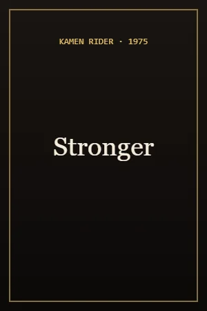
5Kamen Rider Stronger
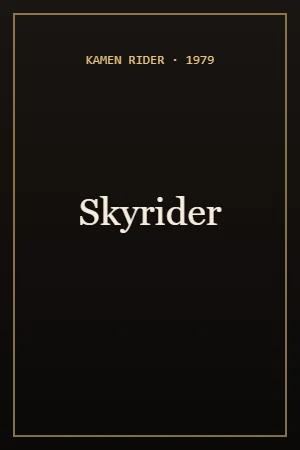
6Kamen Rider (Skyrider)
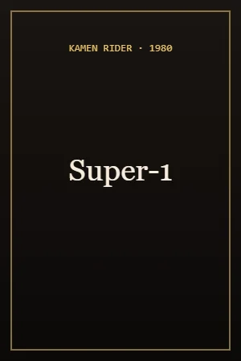
7Kamen Rider Super-1
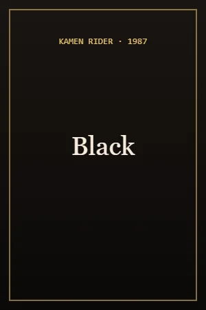
8Kamen Rider Black
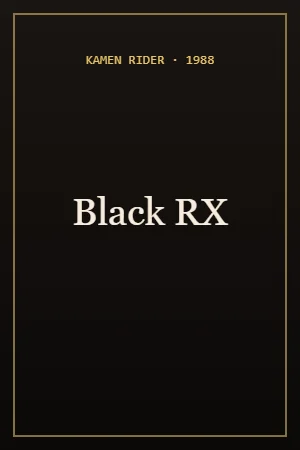
9Kamen Rider Black RX
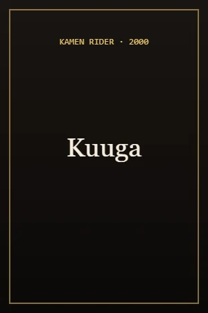
10Kamen Rider Kuuga
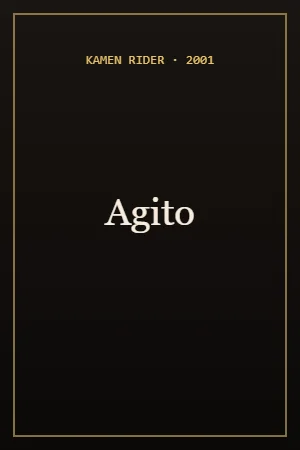
11Kamen Rider Agito
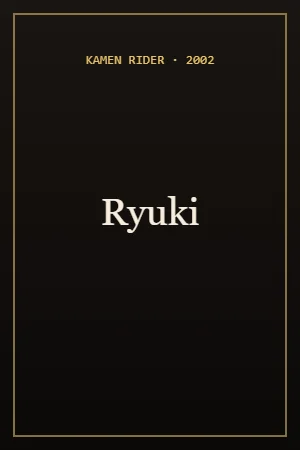
12Kamen Rider Ryuki
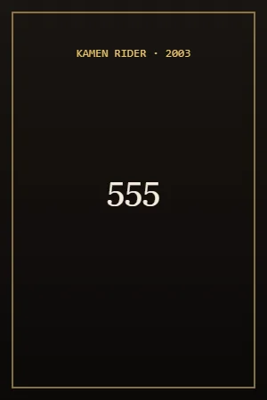
13Kamen Rider 555
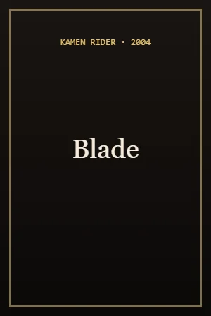
14Kamen Rider Blade
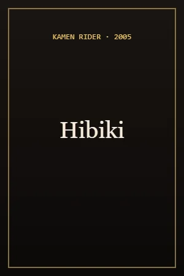
15Kamen Rider Hibiki
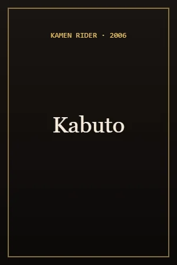
16Kamen Rider Kabuto
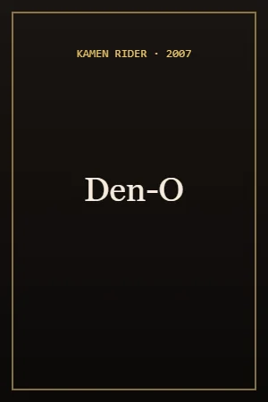
17Kamen Rider Den-O
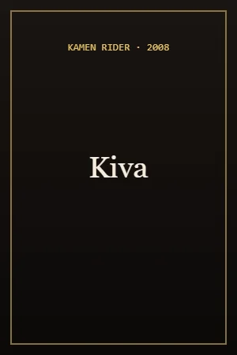
18Kamen Rider Kiva
- 19
Kamen Rider Decade
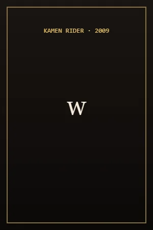
20Kamen Rider W
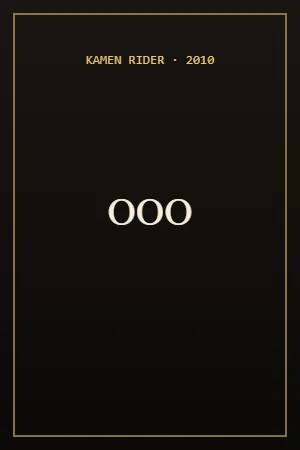
21Kamen Rider OOO
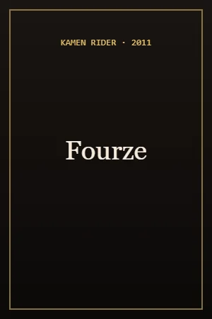
22Kamen Rider Fourze
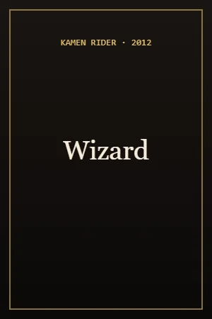
23Kamen Rider Wizard
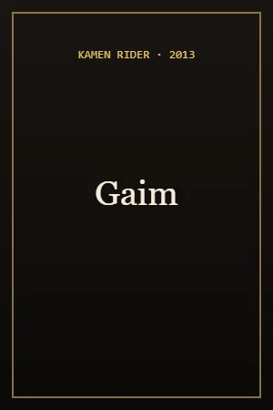
24Kamen Rider Gaim
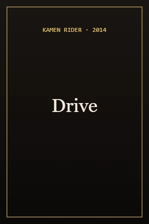
25Kamen Rider Drive
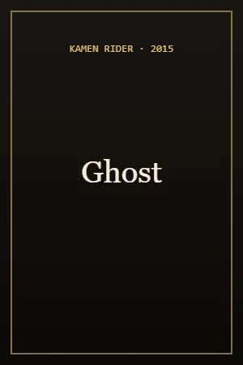
26Kamen Rider Ghost
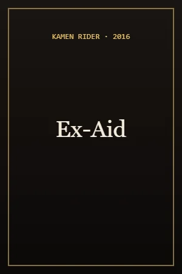
27Kamen Rider Ex-Aid
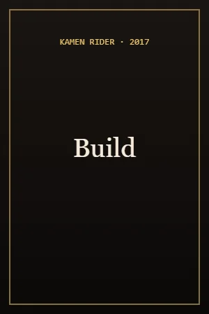
28Kamen Rider Build
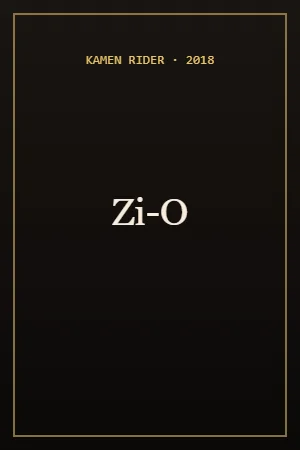
29Kamen Rider Zi-O
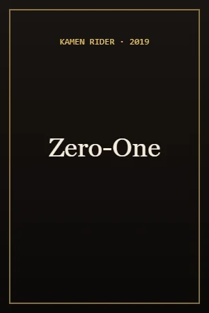
30Kamen Rider Zero-One
- 31
Kamen Rider Saber
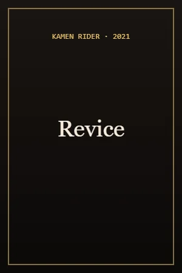
32Kamen Rider Revice
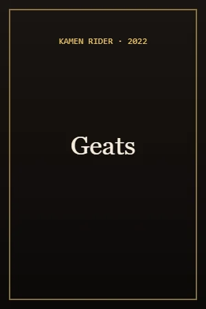
33Kamen Rider Geats
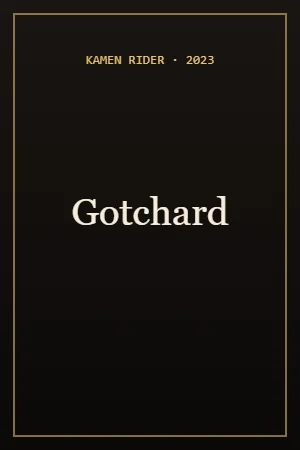
34Kamen Rider Gotchard
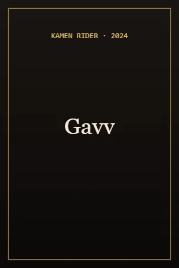
35Kamen Rider Gavv
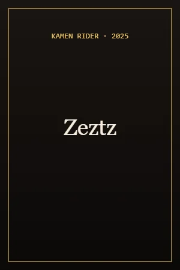
36Kamen Rider Zeztz
- 37
Kamen Rider MY-TH
Questions
Where should I start with Kamen Rider?
Any series works as a first watch, because nearly every one tells a new story. W, Den-O, Build and Kuuga are popular starting points.
Do I need to watch Kamen Rider in order?
No. Order only matters for crossovers like Decade and Zi-O, and for the yearly team-up movies.
What are the Showa, Heisei and Reiwa eras?
They are named after Japan’s imperial eras. Showa covers the original 1970s and 1980s series, Heisei runs from Kuuga (2000) to Zi-O, and Reiwa starts with Zero-One (2019).
More chronological orders


Watch it with your friends.
Kuvacult is a free movie tracker with shared watchlists, a veto game for picking movie night, and séances for watching together.